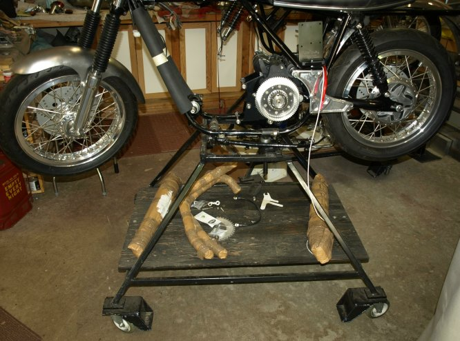
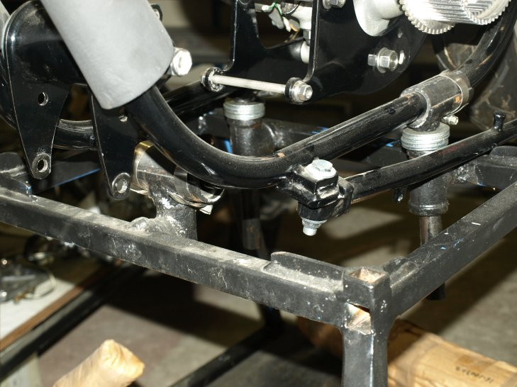
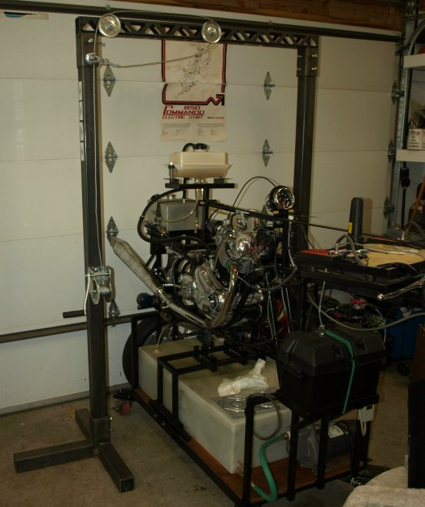
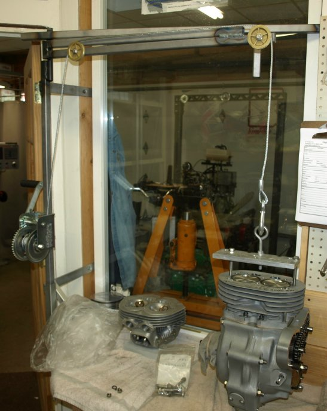

Last Updated 09/28/11
We have had several requests for dimensions of our shop bike stand shown in several pictures on our site. Our intent is not provide you with detailed parts list and instructions, but provide good pictures and overall dimensions. This stand will have to be modified if you are working on a pre-1971 Commando, since these frames do not have a forward bottom cross member. The idea of this stand is you have both wheels free to work on and when doing a frame up restoration, you can mount only the frame and start assembling the bike. Also with wheels, the project can be moved to a convenient place, like under a lift and over to the work bench. We mount the frame to the three stand mounts using hose clamps. Two clamps on each side of the front mount and one each on the rear mounts. We wrap 2" rubber hose, cut down the center of one side, to protect the frame from the mounts and hose clamps.

This stand is made from 1" square tubing with the following dimensions:
- Base is 40" by 52".
- Top is 14" by 18".
- The top is 32" off the ground.
- The three mounting bases are made from 3/4" pipe Ts.
- The three half pipe mounts welded to the top of the 1" pipes are 3" long and should have somewhere around 1.4" I.D.

Since the rear frame tubes angle out from the center line, the two rear mounts need to be welded at an angle or make them rotate as we did. You will have to work up your own dimensions for the three mounts, but our rear mounts are approximately 8 3/4" apart. The rear half pipes are welded at the end to the 1" pipe, where the front mount is welded in the center to the 1" pipe. If you get the 1" pipes threaded at one end, you can thread a stop on the end of the pipe so when only one wheel is mounted to the frame, the mount will not pull out of the base T.
We have two of these stands, one has a fixed front mount as shown in the pictures, and the other lets the front mount rotate like the rear mounts. Both ways work well, but we do not think fixed rear mounts would work as well as rotating mounts. If you make the 1" pipes long enough (ours are 7" long) you can add washers to raise the bike up enough for the side stand and exhaust pipes to clear the top of the stand.
We have also been asked how do we get the bikes on and off the stands. We have built an overhead lift as shown below, but a strong ceiling beam would work just fine. We purchased a boat winch from a local boat store and find this wench works much better that anything we have tried in the past. You can get the pulley wheels at any hardware store. I can hold a completed bike with this lift handle and rise and lower it without any trouble. This lift can be used to remove or mount an engine into a Commando frame. We bolt a bracket to the top of the head, where the top isolastic mounts, to lift the whole engine.

We used the same lift idea to move engines on and off our work bench. We also use this lift to put cylinder on to the crank case and heads onto the cylinders. I can assemble an engine without another pair of hands by being able to slowly lower a part into place.

This page was written and designed by F. H. Eaton & Associates if you have any questions or comments please contact us at info@fheaton.com